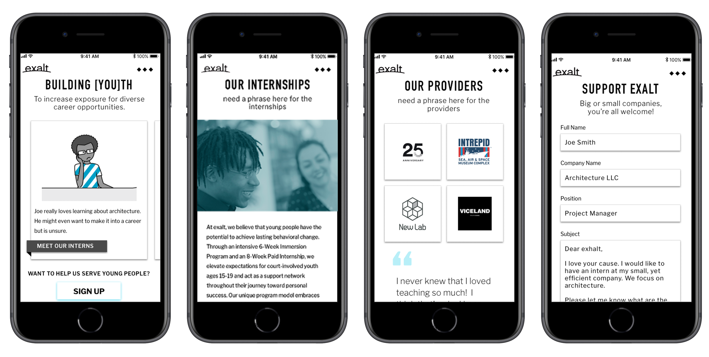
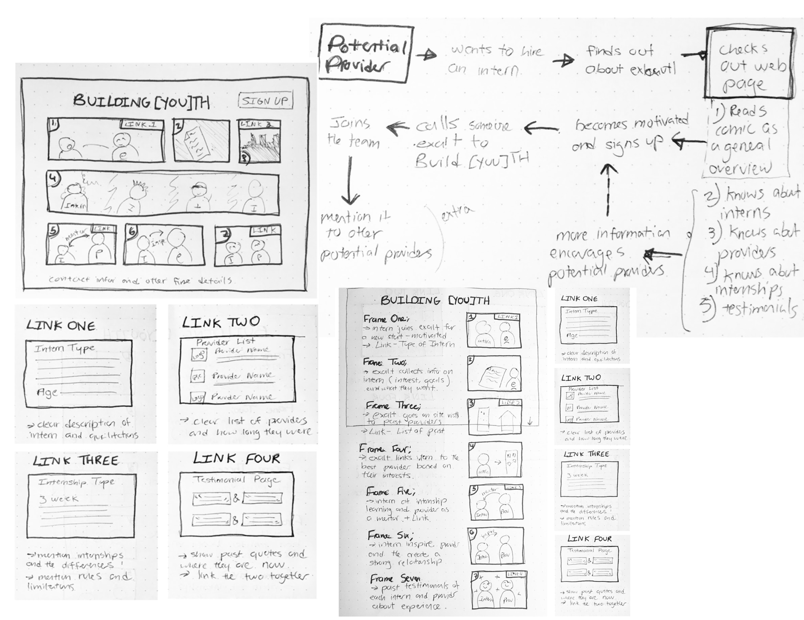
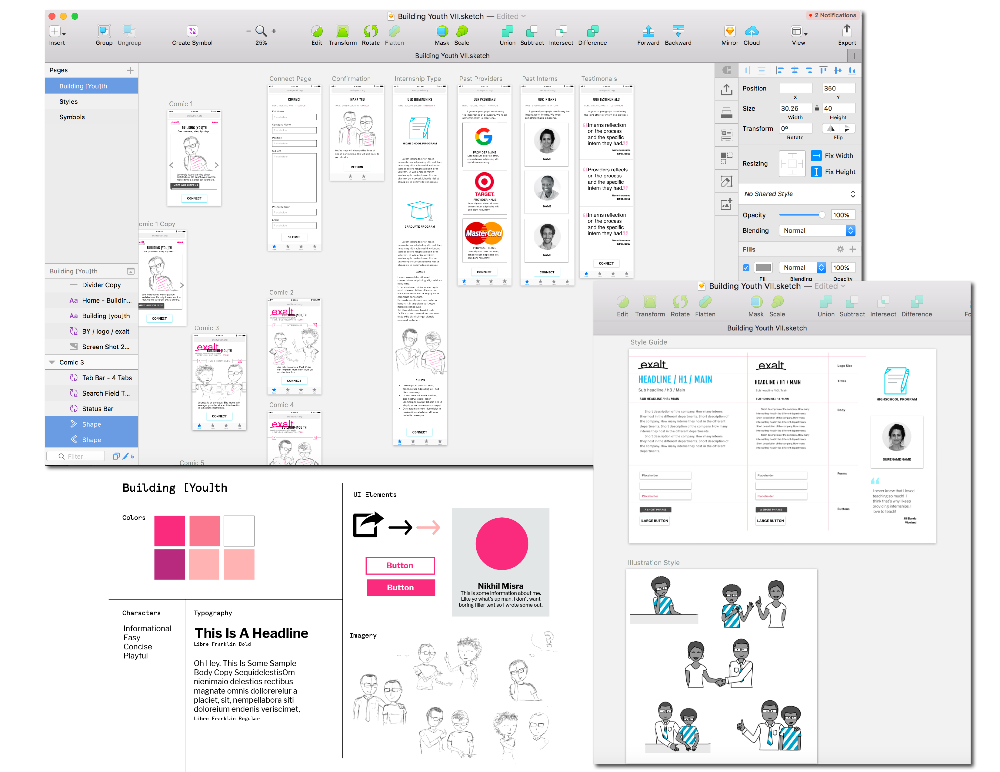
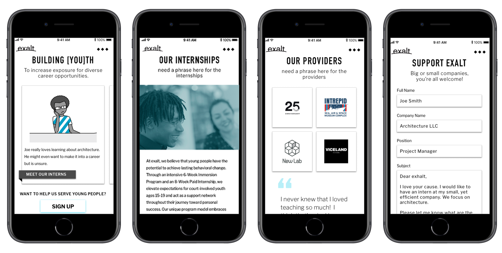
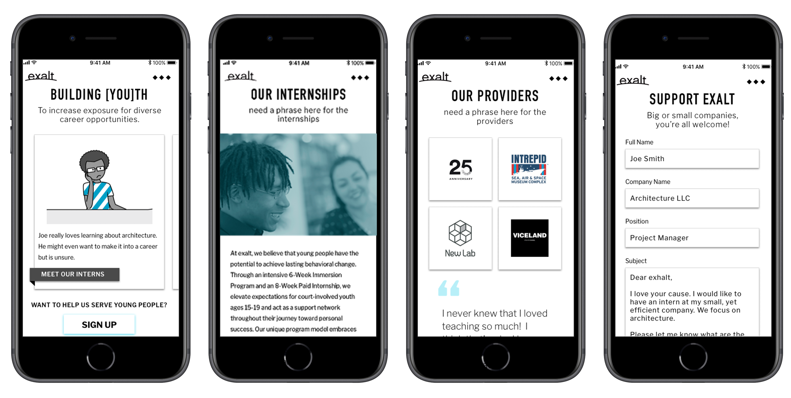

INCREASING EXPOSURE FOR DIVERSE CAREER OPPORTUNITIES

The Internship Site
The non-profit Exalt wanted to redesign their internship page on their website. Originally they had one page that provided an email of their internship coordinator. In order to redesign their internship page, we needed to find the problem and solve it. Through research and many prototypes, we figured out the problem. For our redesign, we wanted to make sure it covered four areas-the internship process, the type of internships, highlighted past provider experiences, and made it simple for potential providers to get more information. Overall, we wanted to the internship program page to give information but have a personal playful touch.
Stakeholder Interviews & User Research
In order to find the simpliest way to bridge the gap between Exalt and a potential internship provider, we interviewed the Exalt internship coordinator to figure out the current problem with the site. We found that Exalt had a problem finding internship providers that trulu understood the program. After realzing the problem, we interviewed both potential and past providers. During our research we found participants wanted to see more quotes from interns and wanted to know what to expect from the program. They also all compared their internship experiences as more of mentorship so we wanted to incorporate that feeling for the site.


Solving The Problem
After collecting all our research, we started mapping out the user journey flow. We decided to engage the potential provider with a cartoon portraying the mentorship that comes with being an internship provider. We moved our paper wireframes to sketch to add more features and additional flows. After using testing our Lo-Fi prototypes, we decided to add style. For our style guide, we wanted to incorporate the Exalt brand with the fusia color but also introduce a teal for contrast. We wanted to portray the Exalt brand through playful diverse illustrations to tell a story.
 
